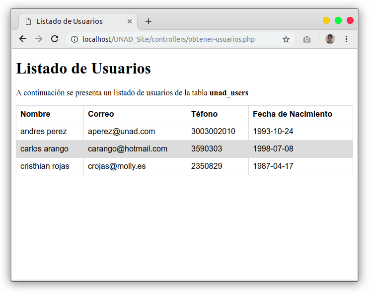

Me alegra demasiado que hayas llegado hasta este punto, eso quiere decir que estás listo para ver el resultado.
Ya como dije anteriormente, terminamos nuestro flujo Modelo (User.php), Vista (listado-usuarios.phtml) Controlador (obtener-usuarios.php).
Si seguiste todos los pasos, al acceder a http://localhost/UNAD_Site/controllers/obtener-usuarios.php veríamos lo siguiente:
